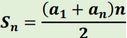
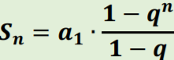
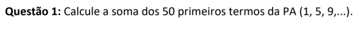
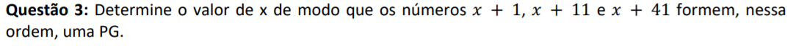

A progressão aritmética e progressão geográfica se referem com as sequências numéricas, que por sua vez se referem a sequências de números que seguem um padrão pré determinado. Elas podem ser finitas ou infinitas, a matemática foca em estudar as sequências que são possíveis fazer uma lei de formação.
A progressão aritmética é a sequência na qual cada termo é o termo anterior somado com uma constante “r” (a partir do segundo). Essa constante é a diferença entre cada número da sequência. Por exemplo: se você subtrair o segundo número pelo primeiro você encontra a constante r.
Pode ser classificada em três categorias, crescente, decrescente e constante.
Existe uma fórmula geral para encontrar um determinado número em uma PA
an -> o termo geral
a1 -> o primeiro termo da PA
n -> número de termos ou a posição do termo a ser encontrado
r -> razão (constante r)
Existe uma fórmula que possibilita somar todos os termos de uma PA finita:
Uma progressão geométrica é uma sequência numérica onde o termo anterior multiplicado por uma constante “q”, resultará no termo seguinte. Você pode encontrar a constante “q” a partir da divisão de de dois números da sequência. Por exemplo: dividindo o segundo número pelo primeiro se encontrará a constante “q”. Como a PA pode ser classificado em 3 categorias:
Assim como a PA também existem uma fórmula geral:
an -> o termo geral
a1 -> o primeiro termo da PG
n -> número de termos ou a posição do termo a ser encontrado
q -> razão (constante q)
Para PG também existe uma fórmula para a soma de finitos elementos, é utilizada quando q for diferente de 1:
Agora vou explicar um pouco sobre dois exercícios, um de PA e outro de PG. O primeiro que escolhi foi a questão 1 do terceiro trabalho. Resolvi escolher essa, pois é fácil de resolver e utiliza uma das fórmulas.
A próxima questão é a número 3 do terceiro trabalho:
O conteúdo de progressão aritmética e progressão geométrica foi uma grande novidade para mim, pois nunca tinha estudado ou ouvido falar sobre, mas me surpreendeu muito. Logo quando vi o nome desse conteúdo fiquei um pouco intrigada e pensando que talvez fosse muito difícil, o que foi muito pelo contrário, assim que entendi do que se tratava vi que era muito mais fácil do que estava imaginando. O mais interessante foi o conteúdo em si, nunca imaginaria que poderiam existir regras e fórmulas para sequências numéricas, ou nomes para determinadas sequências. Como meu aprendizado foi bom, não tive dificuldade com os exercícios. Assim como outros conteúdos, esse também se relacionou com as funções estudadas, permitindo novamente uma maior integração entre os conteúdos e também uma forma de não deixar que nos esqueçamos das funções, que acredito que serão muito importantes no decorrer da nossa vida acadêmica. Por todos esses motivos já citados, decidi incluir esse conteúdo no meu portfolio.
<- voltar para o conteúdo anterior Ir para o próximo conteúdo ->